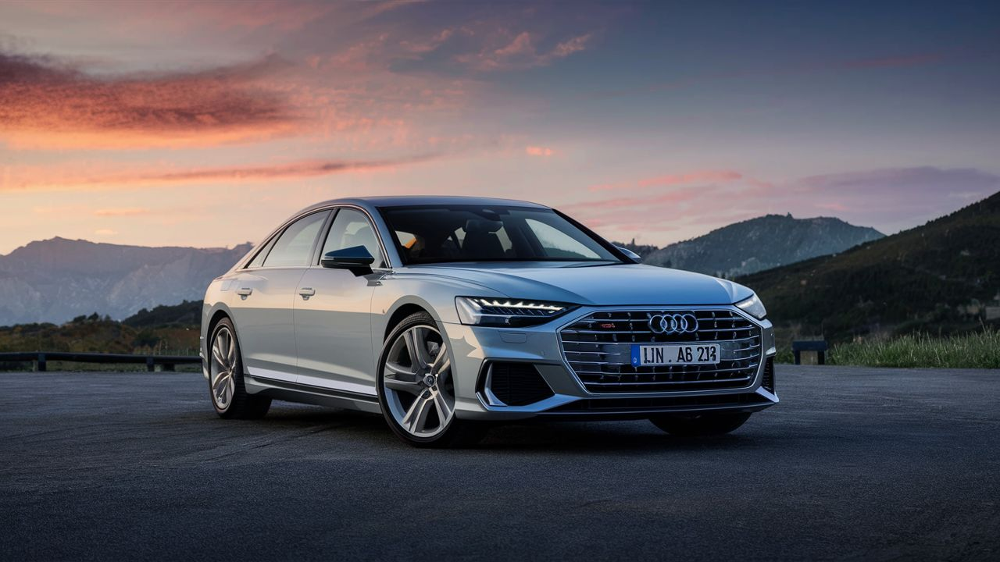
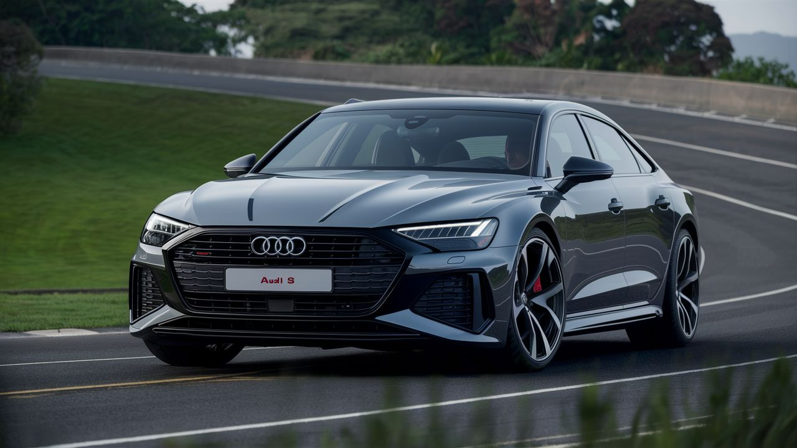
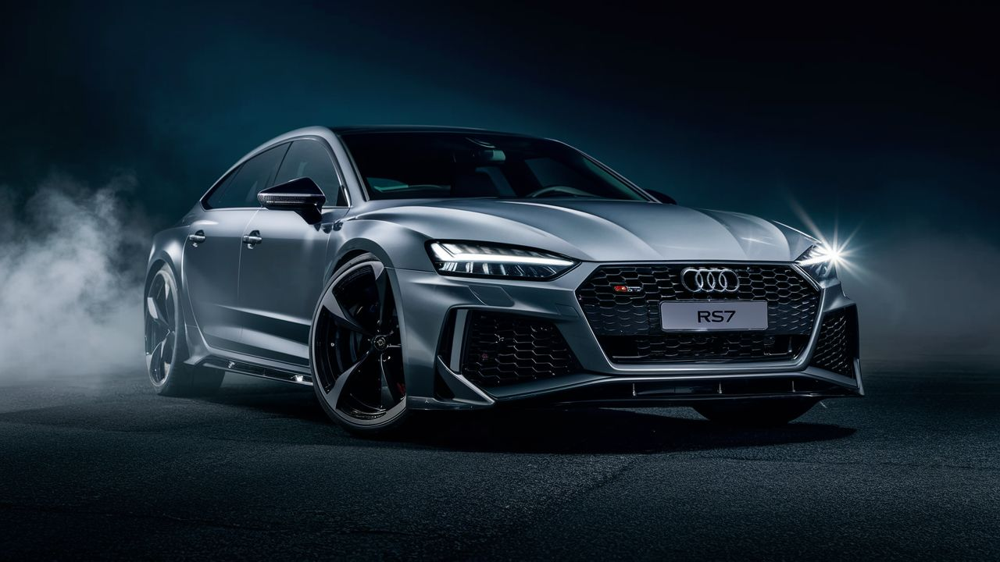

Audi
Audi es una empresa multinacional alemana reconocida por la fabricación de automóviles de gama alta, lujo y deportivos. Fundada en 1909, la marca se destaca por su enfoque en la tecnología de vanguardia y elementos innovadores que la distinguen de sus competidores. Pertenece al grupo Volkswagen y se posiciona en el segmento de automóviles premium. Los cuatro aros entrelazados en su emblema representan la unión de las compañías automovilísticas Audi, Horch, DKW y Wanderer, que se unieron en 1932 para formar Auto Union, posteriormente retomando el nombre de Audi en 19682 . A lo largo de su historia, Audi ha evolucionado su nomenclatura de modelos, pasando por designaciones numéricas en décadas anteriores a letras y cifras en los modelos actuales. Además de sus berlinas y familiares Avant, Audi cuenta con una amplia gama de modelos SUV y el superdeportivo Audi R8 como punta de lanza. La marca se distingue por la calidad de sus productos, su imagen favorable y su presencia destacada en el mercado de segunda mano . En la actualidad, Audi se mantiene a la vanguardia tecnológica con lemas como "A la vanguardia de la técnica", destacándose por sus innovaciones en tecnología, diseño, velocidad y confort. La marca ha logrado un prestigio significativo en la industria automotriz gracias a su excelencia en todos los aspectos del diseño y rendimiento automotriz
Modelos destacados
Audi A8:

Motor: V6 de 3.0 litros Twin-Turbo o V8 de 4.0 litros Twin-Turbo Potencia: 335 - 563 caballos de fuerza Aceleración (0-100 km/h): 5.6 - 3.9 segundos Características: Berlina de lujo, tecnología avanzada, confort excepcional. Precio: Desde aproximadamente $87,000 USD.
Audi S8
Motor: V8 de 4.0 litros Twin-Turbo Potencia: 563 caballos de fuerza Aceleración (0-100 km/h): 3.8 segundos Características: Berlina deportiva de lujo, rendimiento emocionante, interior sofisticado. Precio: Desde aproximadamente $131,000 USD.
Audi RS7
Motor: V8 de 4.0 litros Twin-Turbo Potencia: 591 caballos de fuerza Aceleración (0-100 km/h): 3.6 segundos Características: Sportback de alto rendimiento, diseño atlético, tecnología de vanguardia. Precio: Desde aproximadamente $115,000 USD.